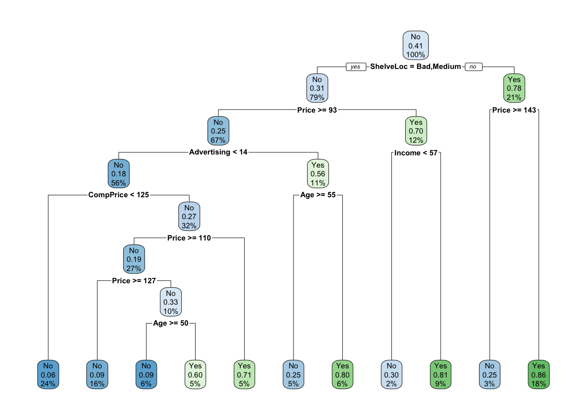
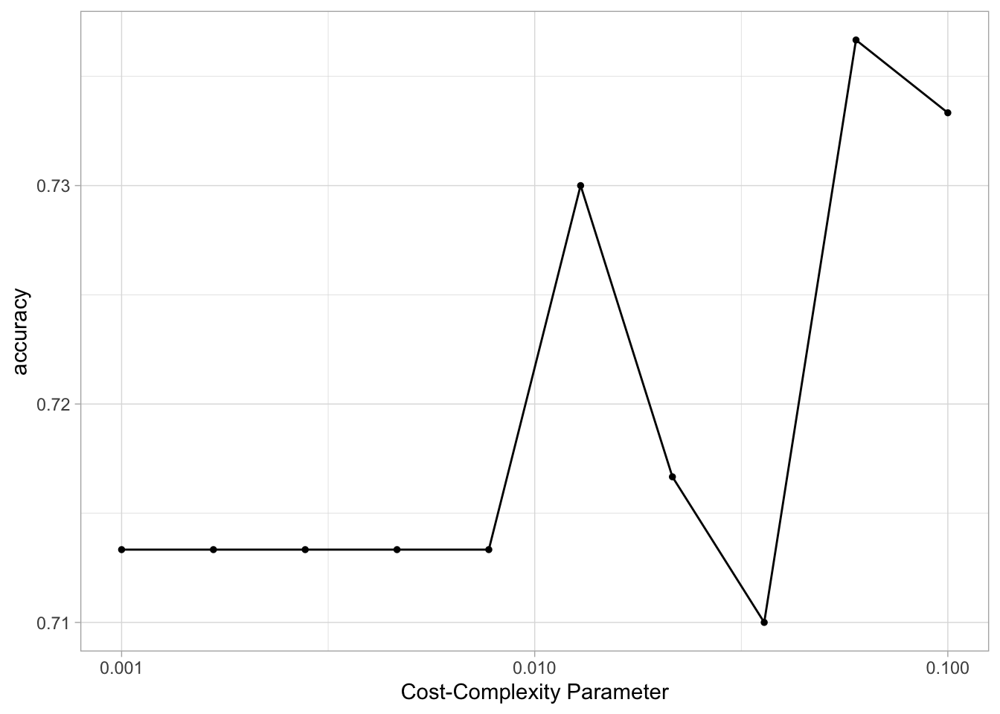
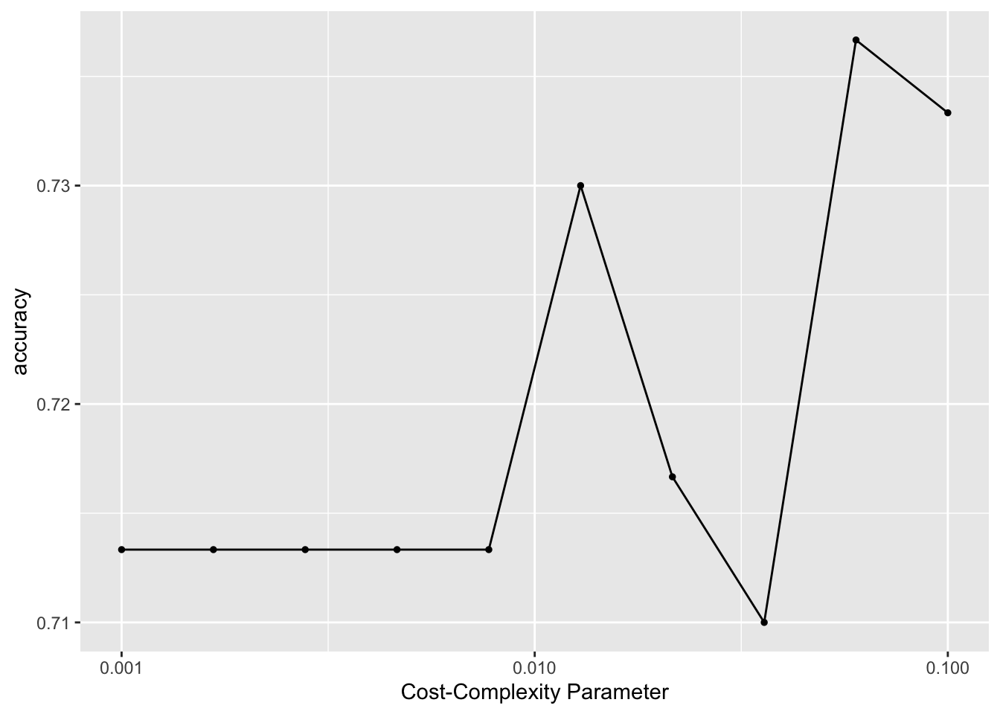
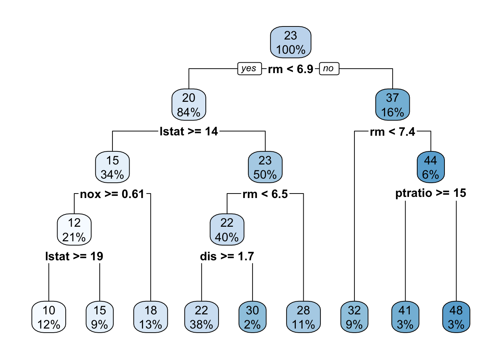
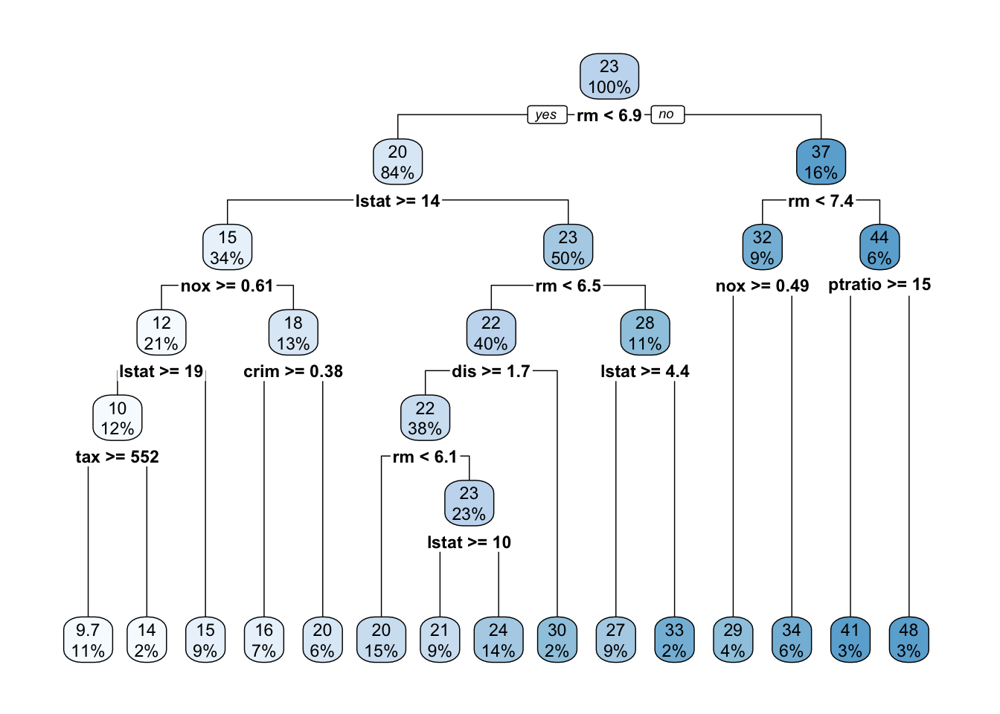
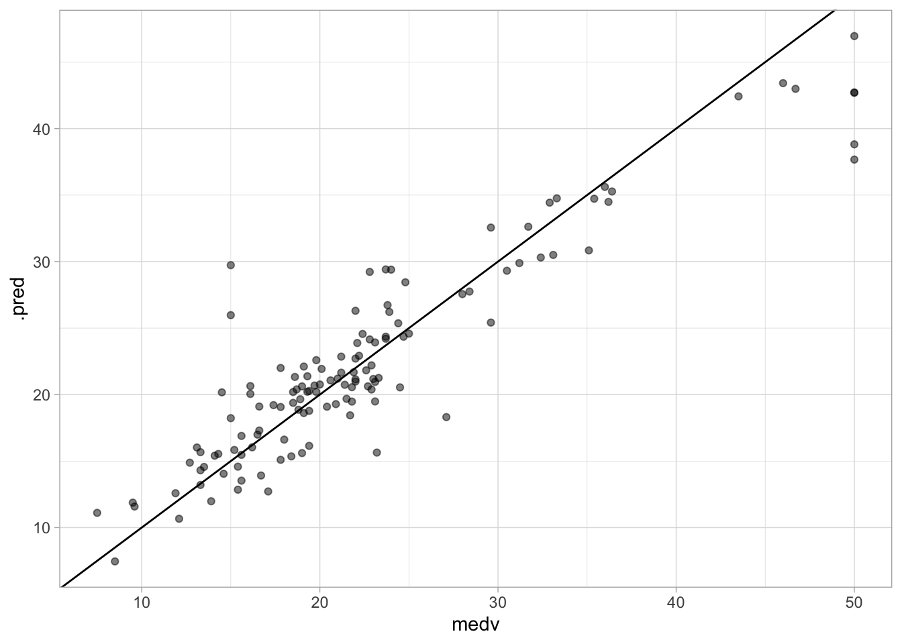
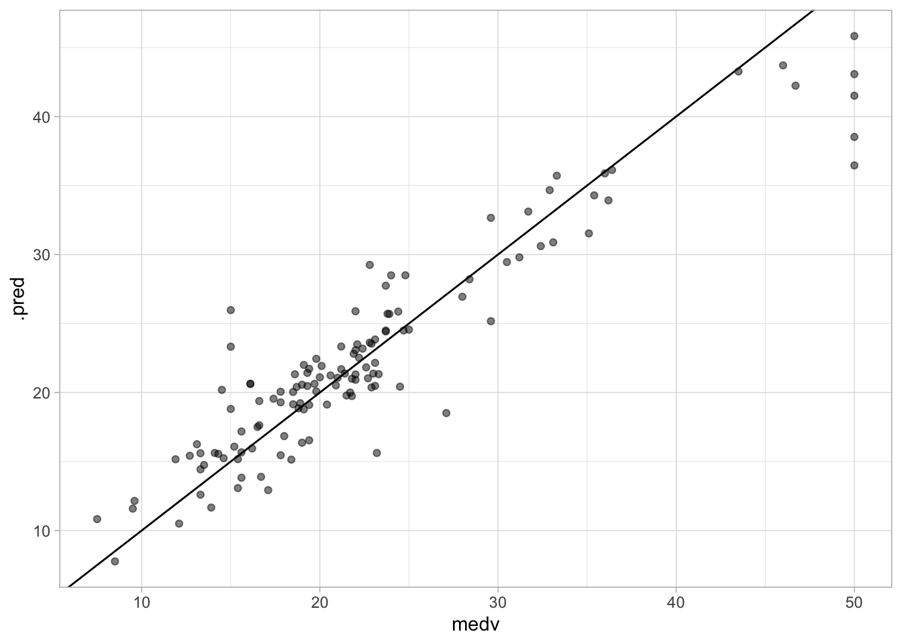

8 Tree-Based Methods
This lab will take a look at different tree-based models, in doing so we will explore how changing the hyperparameters can help improve performance. This chapter will use parsnip for model fitting and recipes and workflows to perform the transformations, and tune and dials to tune the hyperparameters of the model. rpart.plot is used to visualize the decision trees created using the rpart package as engine, and vip is used to visualize variable importance for later models.
library(tidymodels)
library(ISLR)
library(rpart.plot)
library(vip)
data("Boston", package = "MASS")
Boston <- as_tibble(Boston)The Boston data set contain various statistics for 506 neighborhoods in Boston. We will build a regression model that related the median value of owner-occupied homes (medv) as the response with the remaining variables as predictors.
The Boston data set is quite outdated and contains some really unfortunate variables.
We will also use the Carseats data set from the ISLR package to demonstrate a classification model. We create a new variable High to denote if Sales <= 8, then the Sales predictor is removed as it is a perfect predictor of High.
8.1 Fitting Classification Trees
We will both be fitting a classification and regression tree in this section, so we can save a little bit of typing by creating a general decision tree specification using rpart as the engine.
tree_spec <- decision_tree() %>%
set_engine("rpart")Then this decision tree specification can be used to create a classification decision tree engine. This is a good example of how the flexible composition system created by parsnip can be used to create multiple model specifications.
class_tree_spec <- tree_spec %>%
set_mode("classification")With both a model specification and our data are we ready to fit the model.
class_tree_fit <- class_tree_spec %>%
fit(High ~ ., data = Carseats)When we look at the model output we see a quite informative summary of the model. It tries to give a written description of the tree that is created.
class_tree_fitparsnip model object
n= 400
node), split, n, loss, yval, (yprob)
* denotes terminal node
1) root 400 164 No (0.59000000 0.41000000)
2) ShelveLoc=Bad,Medium 315 98 No (0.68888889 0.31111111)
4) Price>=92.5 269 66 No (0.75464684 0.24535316)
8) Advertising< 13.5 224 41 No (0.81696429 0.18303571)
16) CompPrice< 124.5 96 6 No (0.93750000 0.06250000) *
17) CompPrice>=124.5 128 35 No (0.72656250 0.27343750)
34) Price>=109.5 107 20 No (0.81308411 0.18691589)
68) Price>=126.5 65 6 No (0.90769231 0.09230769) *
69) Price< 126.5 42 14 No (0.66666667 0.33333333)
138) Age>=49.5 22 2 No (0.90909091 0.09090909) *
139) Age< 49.5 20 8 Yes (0.40000000 0.60000000) *
35) Price< 109.5 21 6 Yes (0.28571429 0.71428571) *
9) Advertising>=13.5 45 20 Yes (0.44444444 0.55555556)
18) Age>=54.5 20 5 No (0.75000000 0.25000000) *
19) Age< 54.5 25 5 Yes (0.20000000 0.80000000) *
5) Price< 92.5 46 14 Yes (0.30434783 0.69565217)
10) Income< 57 10 3 No (0.70000000 0.30000000) *
11) Income>=57 36 7 Yes (0.19444444 0.80555556) *
3) ShelveLoc=Good 85 19 Yes (0.22352941 0.77647059)
6) Price>=142.5 12 3 No (0.75000000 0.25000000) *
7) Price< 142.5 73 10 Yes (0.13698630 0.86301370) *Once the tree gets more than a couple of nodes it can become hard to read the printed diagram. The rpart.plot package provides functions to let us easily visualize the decision tree. As the name implies, it only works with rpart trees.
class_tree_fit %>%
extract_fit_engine() %>%
rpart.plot()
We can see that the most important variable to predict high sales appears to be shelving location as it forms the first node.
The training accuracy of this model is 85%
augment(class_tree_fit, new_data = Carseats) %>%
accuracy(truth = High, estimate = .pred_class)# A tibble: 1 × 3
.metric .estimator .estimate
<chr> <chr> <dbl>
1 accuracy binary 0.848Let us take a look at the confusion matrix to see if the balance is there
augment(class_tree_fit, new_data = Carseats) %>%
conf_mat(truth = High, estimate = .pred_class) Truth
Prediction No Yes
No 200 25
Yes 36 139And the model appears to work well overall. But this model was fit on the whole data set so we only get the training accuracy which could be misleading if the model is overfitting. Let us redo the fitting by creating a validation split and fit the model on the training data set.
set.seed(1234)
Carseats_split <- initial_split(Carseats)
Carseats_train <- training(Carseats_split)
Carseats_test <- testing(Carseats_split)Now we can fit the model on the training data set.
class_tree_fit <- fit(class_tree_spec, High ~ ., data = Carseats_train)Let us take a look at the confusion matrix for the training data set and testing data set.
augment(class_tree_fit, new_data = Carseats_train) %>%
conf_mat(truth = High, estimate = .pred_class) Truth
Prediction No Yes
No 159 21
Yes 21 99The training data set performs well as we would expect
augment(class_tree_fit, new_data = Carseats_test) %>%
conf_mat(truth = High, estimate = .pred_class) Truth
Prediction No Yes
No 41 8
Yes 15 36but the testing data set doesn’t perform just as well and get a smaller accuracy of 77%
augment(class_tree_fit, new_data = Carseats_test) %>%
accuracy(truth = High, estimate = .pred_class)# A tibble: 1 × 3
.metric .estimator .estimate
<chr> <chr> <dbl>
1 accuracy binary 0.77Let us try to tune the cost_complexity of the decision tree to find a more optimal complexity. We use the class_tree_spec object and use the set_args() function to specify that we want to tune cost_complexity. This is then passed directly into the workflow object to avoid creating an intermediate object.
To be able to tune the variable we need 2 more objects. S resamples object, we will use a k-fold cross-validation data set, and a grid of values to try. Since we are only tuning 1 hyperparameter it is fine to stay with a regular grid.
using autoplot() shows which values of cost_complexity appear to produce the highest accuracy
autoplot(tune_res)
We can now select the best performing value with select_best(), finalize the workflow by updating the value of cost_complexity and fit the model on the full training data set.
best_complexity <- select_best(tune_res)
class_tree_final <- finalize_workflow(class_tree_wf, best_complexity)
class_tree_final_fit <- fit(class_tree_final, data = Carseats_train)
class_tree_final_fit══ Workflow [trained] ══════════════════════════════════════════════════════════
Preprocessor: Formula
Model: decision_tree()
── Preprocessor ────────────────────────────────────────────────────────────────
High ~ .
── Model ───────────────────────────────────────────────────────────────────────
n= 300
node), split, n, loss, yval, (yprob)
* denotes terminal node
1) root 300 120 No (0.6000000 0.4000000)
2) ShelveLoc=Bad,Medium 242 73 No (0.6983471 0.3016529)
4) Price>=92.5 213 51 No (0.7605634 0.2394366) *
5) Price< 92.5 29 7 Yes (0.2413793 0.7586207) *
3) ShelveLoc=Good 58 11 Yes (0.1896552 0.8103448) *At last, we can visualize the model, and we see that the better-performing model is less complex than the original model we fit.
class_tree_final_fit %>%
extract_fit_engine() %>%
rpart.plot()
8.2 Fitting Regression Trees
We will now show how we fit a regression tree. This is very similar to what we saw in the last section. The main difference here is that the response we are looking at will be continuous instead of categorical. We can reuse tree_spec as a base for the regression decision tree specification.
reg_tree_spec <- tree_spec %>%
set_mode("regression")We are using the Boston data set here so we will do a validation split here.
set.seed(1234)
Boston_split <- initial_split(Boston)
Boston_train <- training(Boston_split)
Boston_test <- testing(Boston_split)fitting the model to the training data set
reg_tree_fit <- fit(reg_tree_spec, medv ~ ., Boston_train)
reg_tree_fitparsnip model object
n= 379
node), split, n, deviance, yval
* denotes terminal node
1) root 379 32622.9500 22.54802
2) rm< 6.941 320 13602.3100 19.86281
4) lstat>=14.395 129 2582.1090 14.51550
8) nox>=0.607 80 984.7339 12.35875
16) lstat>=19.34 47 388.6332 10.35957 *
17) lstat< 19.34 33 140.7188 15.20606 *
9) nox< 0.607 49 617.6939 18.03673 *
5) lstat< 14.395 191 4840.3640 23.47435
10) rm< 6.543 151 2861.3990 22.21192
20) dis>=1.68515 144 1179.5970 21.82083 *
21) dis< 1.68515 7 1206.6970 30.25714 *
11) rm>=6.543 40 829.8560 28.24000 *
3) rm>=6.941 59 4199.1020 37.11186
6) rm< 7.437 35 1012.4100 32.08286 *
7) rm>=7.437 24 1010.6200 44.44583
14) ptratio>=15.4 12 585.0767 40.71667 *
15) ptratio< 15.4 12 91.7825 48.17500 *augment(reg_tree_fit, new_data = Boston_test) %>%
rmse(truth = medv, estimate = .pred)# A tibble: 1 × 3
.metric .estimator .estimate
<chr> <chr> <dbl>
1 rmse standard 4.78and the rpart.plot() function works for the regression decision tree as well
reg_tree_fit %>%
extract_fit_engine() %>%
rpart.plot()
Notice how the result is a numeric variable instead of a class.
Now let us again try to tune the cost_complexity to find the best performing model.
reg_tree_wf <- workflow() %>%
add_model(reg_tree_spec %>% set_args(cost_complexity = tune())) %>%
add_formula(medv ~ .)
set.seed(1234)
Boston_fold <- vfold_cv(Boston_train)
param_grid <- grid_regular(cost_complexity(range = c(-4, -1)), levels = 10)
tune_res <- tune_grid(
reg_tree_wf,
resamples = Boston_fold,
grid = param_grid
)And it appears that higher complexity works are to be preferred according to our cross-validation
autoplot(tune_res)
We select the best-performing model according to "rmse" and fit the final model on the whole training data set.
best_complexity <- select_best(tune_res, metric = "rmse")
reg_tree_final <- finalize_workflow(reg_tree_wf, best_complexity)
reg_tree_final_fit <- fit(reg_tree_final, data = Boston_train)
reg_tree_final_fit══ Workflow [trained] ══════════════════════════════════════════════════════════
Preprocessor: Formula
Model: decision_tree()
── Preprocessor ────────────────────────────────────────────────────────────────
medv ~ .
── Model ───────────────────────────────────────────────────────────────────────
n= 379
node), split, n, deviance, yval
* denotes terminal node
1) root 379 32622.95000 22.54802
2) rm< 6.941 320 13602.31000 19.86281
4) lstat>=14.395 129 2582.10900 14.51550
8) nox>=0.607 80 984.73390 12.35875
16) lstat>=19.34 47 388.63320 10.35957
32) tax>=551.5 40 243.94980 9.67750 *
33) tax< 551.5 7 19.73714 14.25714 *
17) lstat< 19.34 33 140.71880 15.20606 *
9) nox< 0.607 49 617.69390 18.03673
18) crim>=0.381565 25 313.20000 16.20000 *
19) crim< 0.381565 24 132.30000 19.95000 *
5) lstat< 14.395 191 4840.36400 23.47435
10) rm< 6.543 151 2861.39900 22.21192
20) dis>=1.68515 144 1179.59700 21.82083
40) rm< 6.062 56 306.22860 20.28571 *
41) rm>=6.062 88 657.41950 22.79773
82) lstat>=9.98 35 98.32686 21.02571 *
83) lstat< 9.98 53 376.61550 23.96792 *
21) dis< 1.68515 7 1206.69700 30.25714 *
11) rm>=6.543 40 829.85600 28.24000
22) lstat>=4.44 33 274.06180 27.15455 *
23) lstat< 4.44 7 333.61710 33.35714 *
3) rm>=6.941 59 4199.10200 37.11186
6) rm< 7.437 35 1012.41000 32.08286
12) nox>=0.4885 14 673.46930 28.89286 *
13) nox< 0.4885 21 101.49810 34.20952 *
7) rm>=7.437 24 1010.62000 44.44583
14) ptratio>=15.4 12 585.07670 40.71667 *
15) ptratio< 15.4 12 91.78250 48.17500 *Visualizing the model reveals a much more complex tree than what we saw in the last section.
reg_tree_final_fit %>%
extract_fit_engine() %>%
rpart.plot()
8.3 Bagging and Random Forests
Here we apply bagging and random forests to the Boston data set. We will be using the randomForest package as the engine. A bagging model is the same as a random forest where mtry is equal to the number of predictors. We can specify the mtry to be .cols() which means that the number of columns in the predictor matrix is used. This is useful if you want to make the specification more general and useable to many different data sets. .cols() is one of many descriptors in the parsnip package. We also set importance = TRUE in set_engine() to tell the engine to save the information regarding variable importance. This is needed for this engine if we want to use the vip package later.
We fit the model like normal
bagging_fit <- fit(bagging_spec, medv ~ ., data = Boston_train)and we take a look at the testing performance. Which we see is an improvement over the decision tree.
augment(bagging_fit, new_data = Boston_test) %>%
rmse(truth = medv, estimate = .pred)# A tibble: 1 × 3
.metric .estimator .estimate
<chr> <chr> <dbl>
1 rmse standard 3.43We can also create a quick scatterplot between the true and predicted value to see if we can make any diagnostics.
augment(bagging_fit, new_data = Boston_test) %>%
ggplot(aes(medv, .pred)) +
geom_abline() +
geom_point(alpha = 0.5)
There isn’t anything weird going on here so we are happy. Next, let us take a look at the variable importance
vip(bagging_fit)Next, let us take a look at a random forest. By default, randomForest() p / 3 variables when building a random forest of regression trees, and sqrt(p) variables when building a random forest of classification trees. Here we use mtry = 6.
and fitting the model like normal
rf_fit <- fit(rf_spec, medv ~ ., data = Boston_train)this model has a slightly better performance than the bagging model
augment(rf_fit, new_data = Boston_test) %>%
rmse(truth = medv, estimate = .pred)# A tibble: 1 × 3
.metric .estimator .estimate
<chr> <chr> <dbl>
1 rmse standard 3.26We can likewise plot the true value against the predicted value
augment(rf_fit, new_data = Boston_test) %>%
ggplot(aes(medv, .pred)) +
geom_abline() +
geom_point(alpha = 0.5)
it looks fine. No discernible difference between this chart and the one we created for the bagging model.
The variable importance plot is also quite similar to what we saw for the bagging model which isn’t surprising.
vip(rf_fit)you would normally want to perform hyperparameter tuning for the random forest model to get the best out of your forest. This exercise is left for the reader.
8.4 Boosting
We will now fit a boosted tree model. The xgboost packages give a good implementation of boosted trees. It has many parameters to tune and we know that setting trees too high can lead to overfitting. Nevertheless, let us try fitting a boosted tree. We set tree = 5000 to grow 5000 trees with a maximal depth of 4 by setting tree_depth = 4.
fitting the model like normal
boost_fit <- fit(boost_spec, medv ~ ., data = Boston_train)and the rmse is a little high in this case which is properly because we didn’t tune any of the parameters.
augment(boost_fit, new_data = Boston_test) %>%
rmse(truth = medv, estimate = .pred)# A tibble: 1 × 3
.metric .estimator .estimate
<chr> <chr> <dbl>
1 rmse standard 3.34We can look at the scatterplot and we don’t see anything weird going on.
augment(boost_fit, new_data = Boston_test) %>%
ggplot(aes(medv, .pred)) +
geom_abline() +
geom_point(alpha = 0.5)
You would normally want to perform hyperparameter tuning for the boosted tree model to get the best out of your model. This exercise is left for the reader. Look at the Iterative search chapter of Tidy Modeling with R for inspiration.
8.5 Bayesian Additive Regression Trees
This section is WIP.